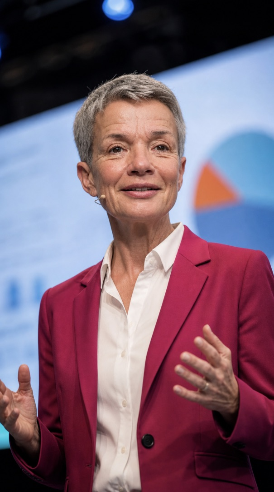
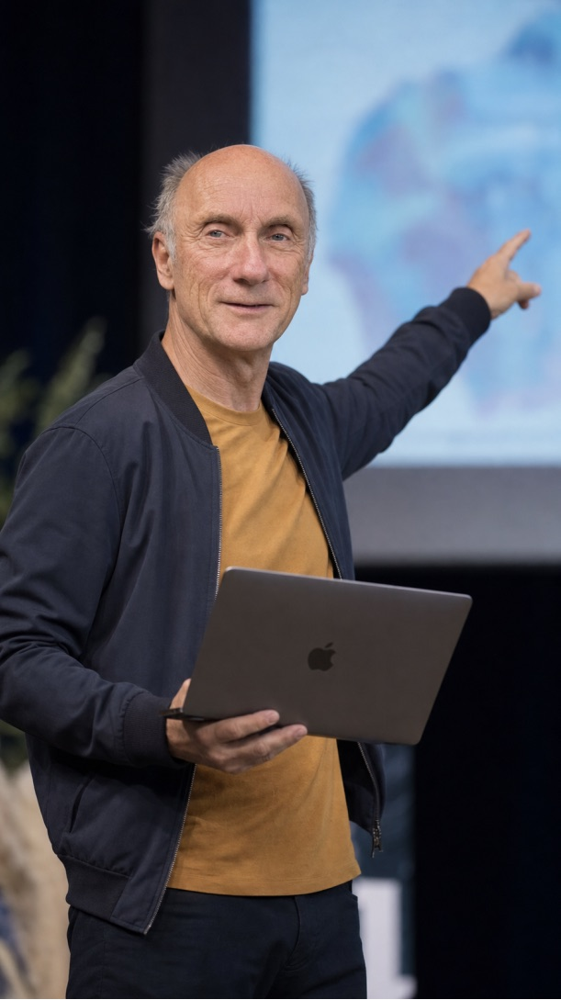

Produktiver und zufriedener.
Wir machen das möglich.
Weniger suchen, nachfragen und doppelt erledigen. Gemeinsam verändern wir Abläufe und schaffen die passenden Werkzeuge – damit die tägliche Arbeit besser läuft.
Im digitalen Office kann jeder Mitarbeiter jede seiner Arbeiten zu jeder Zeit an jedem Ort erledigen.


Wir verstehen Sie. Wir sind gewiss, es geht besser.
Wir, Andrea und Ralf von WORK WITH EASE, haben beide erlebt, was möglich wird, wenn man eingefahrene Wege verlässt. Deshalb lässt es uns nicht kalt, wenn Menschen sich Tag für Tag mit unnötigen Handgriffen, überkommenen Arbeitsweisen oder umständlichen Tools im Office abfinden.
Da fragen wir nach, stellen Gewohnheiten auf den Prüfstand und probieren mit Ihnen aus, wie es besser geht. Wir packen auch mit an. Wir bringen Lust auf Veränderung an Ihre Arbeitsplätze, denn wir wollen Ergebnisse sehen.
Einfachere Abläufe, passende digitale Werkzeuge und KI, die konkrete Arbeit übernimmt: das liefern wir. Und Sie bekommen Wissen, um Ihre Arbeit selbst weiter zu verändern und zu entwickeln. Dazu bieten wir Training und Begleitung, bis Ihr Team mit der neuen Arbeitsweise zurechtkommt.
Bringen wir Bewegung rein.
Für alle, die ihren Office-Alltag mit Digitalisierung und KI leichter machen wollen – für sich, ihr Team, ihr Unternehmen. Auch wenn Sie erst einmal einen Ansatz suchen, mit dem Sie andere für Veränderung gewinnen können.
Gemeinsam schauen wir auf das, was bei Ihnen hakt. Wir bringen einen frischen Blick und konkrete Fragen mit. So wird aus „Irgendwie muss das besser gehen“ ein erster Ansatzpunkt für Verbesserungen.